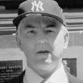

The Accused
| Ron Williamson | ||
|  |
Incident Date: 12/8/82 Jurisdiction: OK Charge: Rape, Murder Conviction: Rape, Murder Sentence: Death |
Year of Conviction: 1988 Exoneration Date: 4/5/99 Sentence Served: 11 Years Real perpetrator found? Not Yet Contributing Causes: Eyewitness Misidenfication, Unvalidated Compensation? Yes |
Ron Williamson and Dennis Fritz were convicted in 1988, in Pontotoc County, Oklahoma, of the murder of Debra Sue Carter. Her body had been found six years earlier. Fritz was sentenced to life in prison. Williamson was sent to death row.The twenty-one year old victim had left her waitressing job and was found raped and murdered in her apartment the following day. Fritz and Williamson were known to frequent the establishment where the victim worked. The prosecution presented evidence that the victim had previously complained to a friend that they “made her nervous.” Williamson had been seen at the restaurant the night of the murder without Fritz.
The twenty-one year old victim had left her waitressing job and was found raped and murdered in her apartment the following day. Fritz and Williamson were known to frequent the establishment where the victim worked. The prosecution presented evidence that the victim had previously complained to a friend that they “made her nervous.” Williamson had been seen at the restaurant the night of the murder without Fritz.